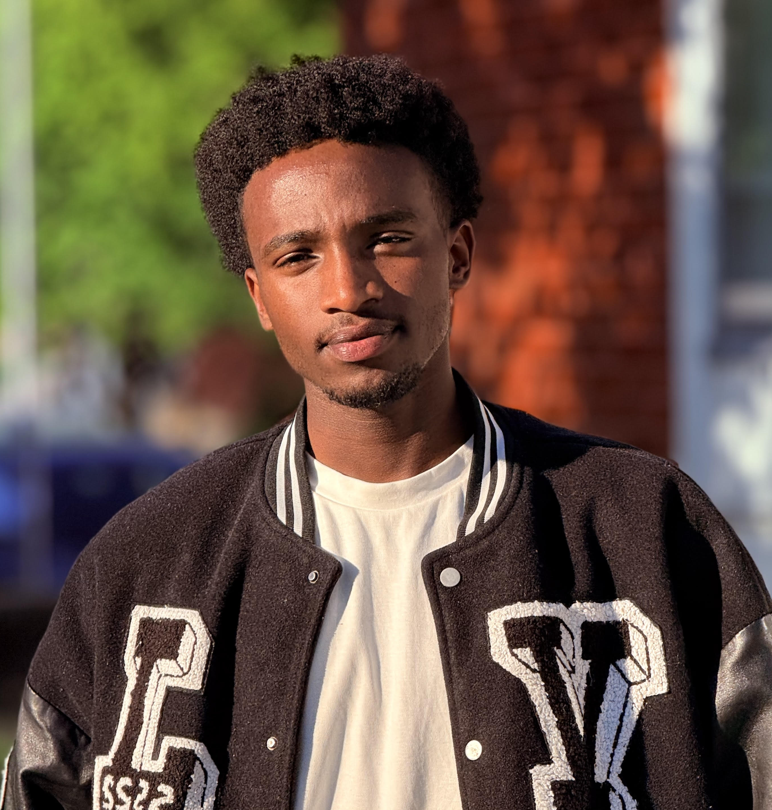
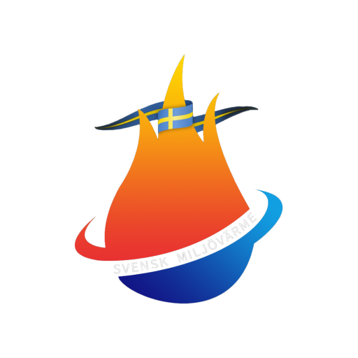

Om BinWise
BinWise är en webbapplikation utvecklad för att förenkla,
tydliggöra och effektivisera avfallssortering. Genom att använda
AI-teknik kan användaren ta en bild av ett föremål som ska
återvinnas, varpå systemet analyserar innehållet och
identifierar rätt kategori samt station på
återvinningscentralen.
Genom att kombinera intelligent bildanalys med modern och
användarvänlig design gör BinWise det snabbt och enkelt att
sortera avfall korrekt.

Svensk Miljövärme
I projektet har vi även samarbetat med Svensk Miljövärme, där vi genom intervjuer och rådgivning har fått värdefulla insikter kring hur en applikation kan utformas för att på ett så enkelt, tydligt och effektivt sätt som möjligt guida användaren till rätt kategori och station för avfallshantering.
